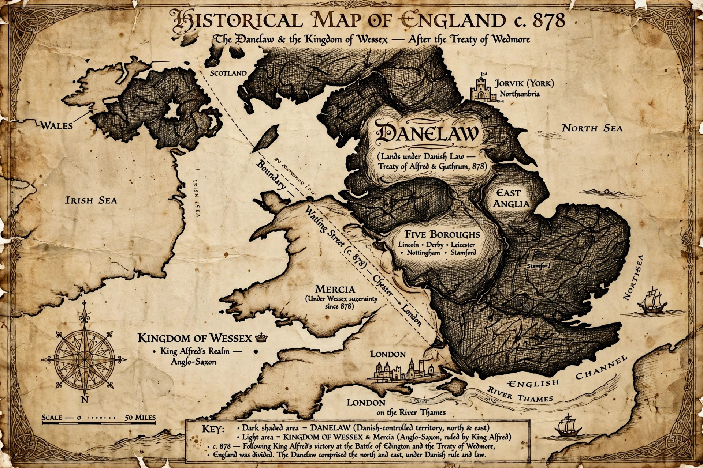

The Danelaw (from Old English Dena lagu, "the law of the Danes") was the part of England governed by Danish law and custom following the Viking invasions of the ninth century. At its greatest extent it covered the north and east of England — roughly Yorkshire, the Five Boroughs of the East Midlands (Leicester, Nottingham, Derby, Stamford and Lincoln), East Anglia and the lands between the Thames and the Tees. Its legacy survives in hundreds of Scandinavian place names and in English words borrowed from Old Norse.
| Danelaw | |
|---|---|
 The Danelaw, c. 878 | |
| Period | 9th–11th centuries |
| Region | Northern and eastern England |
| Key treaty | Treaty of Alfred and Guthrum (c. 878–890) |
| Centres | York (Jórvík), the Five Boroughs |
The Great Heathen Army invaded England in 865, conquering Northumbria, East Anglia and much of Mercia. After Alfred the Great of Wessex defeated Guthrum at the Battle of Edington in 878, the Treaty of Alfred and Guthrum fixed a boundary running up the Thames, along the Lea to Bedford and up the Ouse to Watling Street: north and east of this line, Danish law prevailed. Scandinavian armies settled as farmers and traders; York (Jórvík) became a major commercial hub.
The Danelaw had distinctive legal usages, land units (carucates and wapentakes rather than hides and hundreds) and a relatively free peasantry (sokemen) noted in Domesday Book. English kings reconquered the region during the tenth century, but Scandinavian settlement left deep marks: place names in -by, -thorpe, -thwaite and -toft; the Ridings of Yorkshire (from Old Norse "thirdings"); and common words such as sky, egg, knife, window, they/them/their. Danish rule briefly returned on a national scale under Cnut the Great (1016–1035).
Battle of Edington · Alfred the Great · Guthrum · Viking Age · Domesday Book